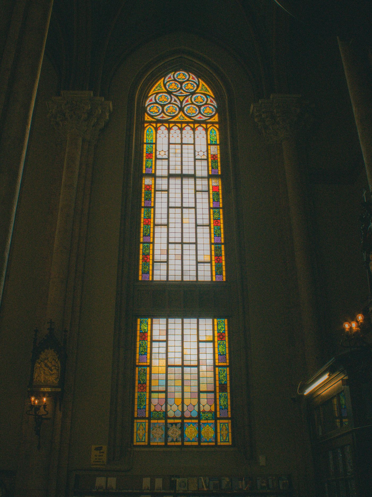
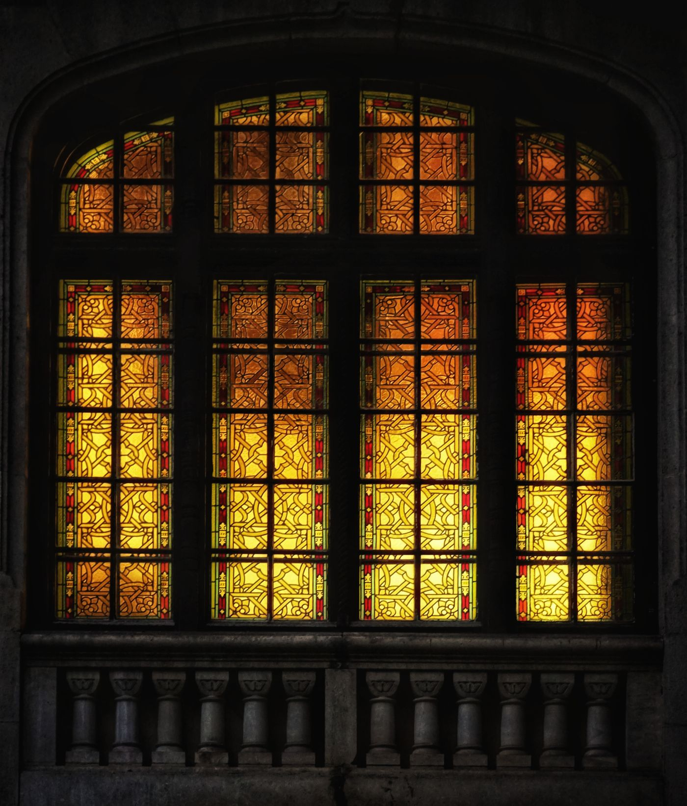
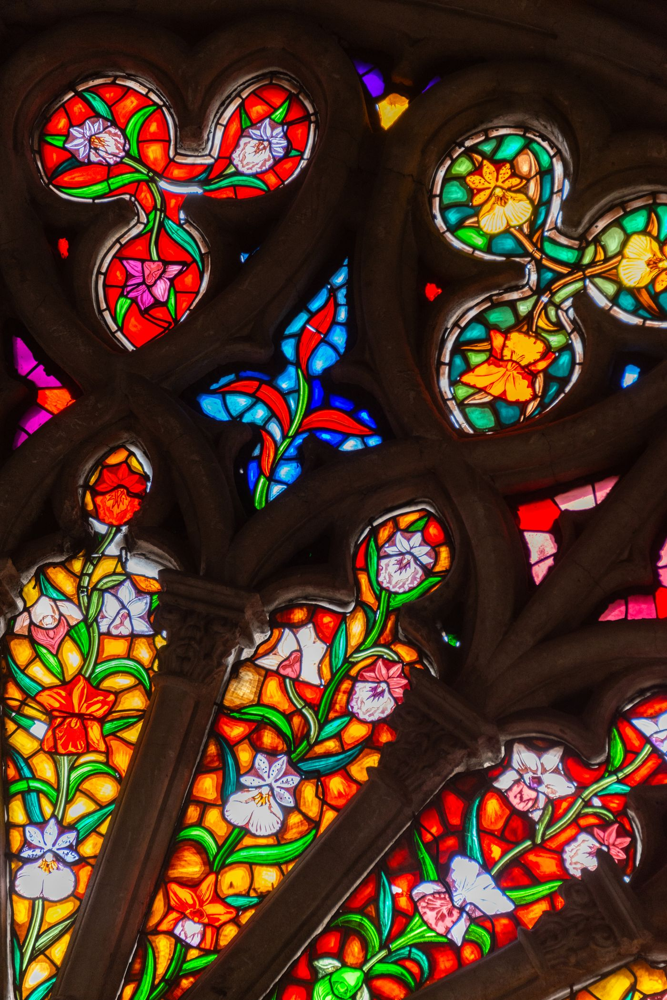

New stained glass & mosaics — est. 2014
A new window has to earn its wall.
I design and make new stained-glass windows and glass mosaics — for churches that have stood for centuries, for libraries and schools still finding their character, and for houses whose stairs deserve better light. Every window begins as a drawing, is approved at full size before a single piece is cut, and is priced from tables printed on this page.
- Base
- York — working across the UK
- Commissions
- Churches · public buildings · homes
- Now booking
- Design work for spring 2027
- Method
- Drawn, cut, painted & leaded in one studio


The studio
New work, honestly new.
This studio makes nothing old. We design windows for the buildings and the people in front of us now — contemporary glass that sits quietly in a medieval wall because it respects the wall, not because it is pretending to be medieval.
“I will not make you a window that pretends to be four hundred years old. A new window should be the best thing its own century can put in the wall — legible as new at arm's length, at home in the building from the door.”
Three kinds of work fill the commission book: ecclesial windows for parishes and chapels, civic glass and mosaics for public buildings, and domestic pieces — stair windows, door lights, garden screens — for houses. The method is the same for all three, and it is printed in full on the About page, approval gates included.
The commission book
Plan a window from the studio's own tables.
Nothing here is priced by mood. The studio counts every window the same way — pieces, metres of lead came and weeks at the bench, per square metre, by class — and the planner below reads these exact tables. Set a size and a class, and it will show its workings.
| Window class | Pieces / m² | Lead came / m² | Studio pace (m² / week) | Making (£ / m²) |
|---|---|---|---|---|
| Ecclesial — single lancet | 42 | 14 | 0.8 | 1,450 |
| Ecclesial — multi-light window | 55 | 19 | 0.65 | 1,680 |
| Civic / public panel | 48 | 16 | 0.7 | 1,540 |
| Domestic leaded light | 30 | 10 | 1.2 | 980 |
| Glass mosaic | 460 | 0 | 0.3 | 2,250 |
Mosaic is counted in tesserae and set in a cement bed — it is not leaded, so its came figure is honestly zero. Making covers cutting, painting and firing where the design calls for it, leading or setting, soldering and cementing. It excludes glass (Table S2), the design & cartoon fee (Table F1) and installation, which is quoted after survey.
| Glass | Material (£ / m²) | What it is |
|---|---|---|
| Mouth-blown antique | 385 | Blown into a cylinder, cut and flattened by hand. Seeds and striations from the blowing; no two sheets alike. Ordered per project — allow 6–10 weeks from the glassworks. |
| Machine-made cathedral | 120 | Rolled machine-made glass with an even texture and consistent colour. Held in stock in the studio's standard range. |
The Window Planner
Choose a class, set the opening's size, and pick a glass — or compare both. The figures update from Tables S1 and S2 as you go.
- Glazed area
- 2.88 m²
- Pieces to cut
- 121
- Lead came
- 40.3 m
- Studio time
- 4.0 weeks
- Cost band — mouth-blown
- £5,200 – £6,400
- Cost band — machine-made
- £4,500 – £5,500
Workings, from the tables above. Area 1.20 × 2.40 = 2.88 m² · pieces 2.88 × 42 = 121.0 → 121 · came 2.88 × 14 = 40.3 m · studio time 2.88 ÷ 0.8 = 3.6 → 4.0 weeks (rounded up to the half week) · mouth-blown 2.88 × (£385 + £1,450) = £5,285 → band £5,200 – £6,400 · machine-made 2.88 × (£120 + £1,450) = £4,522 → band £4,500 – £5,500. Band rule: the estimate is rounded down to the nearest £100 at the low end; the high end adds a fifth for access, scaffolding and fixing unknowns, then rounds up.
The honest comparison
What the difference buys: colour that moves. Mouth-blown glass carries the marks of the blowing, so a field of blue is never quite flat — it deepens and pales as you cross the room, and no other window will ever match it exactly. What it does not buy: strength, weatherproofing or lifespan. Both glasses are cut, leaded, soldered and cemented the same way, and both carry the same ten-year workmanship guarantee. Choose mouth-blown for the light; choose machine-made for the budget, and spend the difference where it shows.
Booking estimator
The build-up of a commission, line by line: the design & cartoon fee for the class, then making and glass by the square metre.
| Window class | Fee |
|---|---|
| Ecclesial — single lancet | £1,250 |
| Ecclesial — multi-light window | £1,600 |
| Civic / public panel | £1,400 |
| Domestic leaded light | £550 |
| Glass mosaic | £950 |
- Design & cartoon (Table F1)
- £1,400
- Making (Table S1)
- £3,080
- Glass (Table S2)
- £770
- Estimate
- £5,250
Workings. Design & cartoon £1,400 (Table F1, civic / public panel) + making 2.0 m² × £1,540 = £3,080 + glass 2.0 m² × £385 = £770 → £5,250. An estimate at mid-band figures, not a quote: the fixed price is set at Gate 2, when the cartoon is approved and the opening has been surveyed.
Featured commission
The east window at St Cuthbert's.
A parish church in North Yorkshire whose 1968 east window had bowed beyond repair asked for the farming year and the Easter dawn. The answer is contemporary — four seasons as fields, a river and rising light — drawn with the parish, approved by faculty, and glazed in mouth-blown glass.
- Client
- The parish of St Cuthbert
- Building
- Parish church, east wall
- Glass
- Mouth-blown antique, 11 colours
- Size
- 6.2 m² across three lights
- Pieces
- 341, from the printed schedule
- Status
- Installed October 2024
“We argued about the cartoon for two evenings, in the nave, with the drawing pinned where the window would go. That is exactly why nobody argues about the window.”
— The Revd Canon Judith Amery, Vicar of St Cuthbert's, on the east window

The register
Recent commissions, as recorded.
The commission book is a register, not a brochure: every entry carries its glass type, because glass type is printed on every invoice this studio sends.
| Commission | Client | Service | Glass | Status |
|---|---|---|---|---|
| East window, three lights | Parish of St Cuthbert | Ecclesial window | Mouth-blown antique | Installed Oct 2024 |
| Stair window, 1930s house | Private client, Harrogate | Domestic piece | Machine-made cathedral | Installed Jun 2025 |
| River Rooms mosaic, 11.5 m² | City library service | Civic mosaic | Machine-made glass tesserae | Installed Mar 2023 |
| Garden-room screen panels | Hospice trust | Civic glass | Mixed — mouth-blown field, machine borders, as tendered | In the studio |
| Chapel window, single lancet | Independent school | Ecclesial window | Mouth-blown antique | At Gate 2 — cartoon |
What moves the price
Area first. Everything in the book is counted per square metre, so size is the largest single figure in any price.
Glass type. Mouth-blown costs roughly three times machine-made per sheet — £385 against £120 in Table S2 — before a single cut is made.
Pieces. A design cut at 55 pieces per m² takes longer to make than one cut at 30. Fine detail is bought by the piece.
Access. Scaffolding, occupied buildings and out-of-hours installation are real costs and are quoted after survey, never guessed.
What doesn't
The subject matter. A window of wheat costs what a window of waves costs at the same size, class and glass.
Whether the design is fashionable. The tables do not have a column for taste.
And the deposit is a third at Gate 2 — never more, and the design fee is credited in full if the commission proceeds within twelve months. Full terms are on the About page.
The record, counted
63
windows & panels installed since the studio opened in 2014
412 m²
of glass cut, painted and leaded at this bench
31
cartoons approved at first presentation
29
cartoons revised after client comment — printed without embarrassment; revision is the gate working
7
commissions declined on design grounds, including two asked to imitate medieval work
0
sheets of machine glass ever substituted without the client's signature on the schedule
Enquiries
Have a wall that needs earning?
Write with the building, the opening and the rough size — a photograph of the wall as it is now helps more than measurements at this stage. Replies within three working days.
Start an enquiry